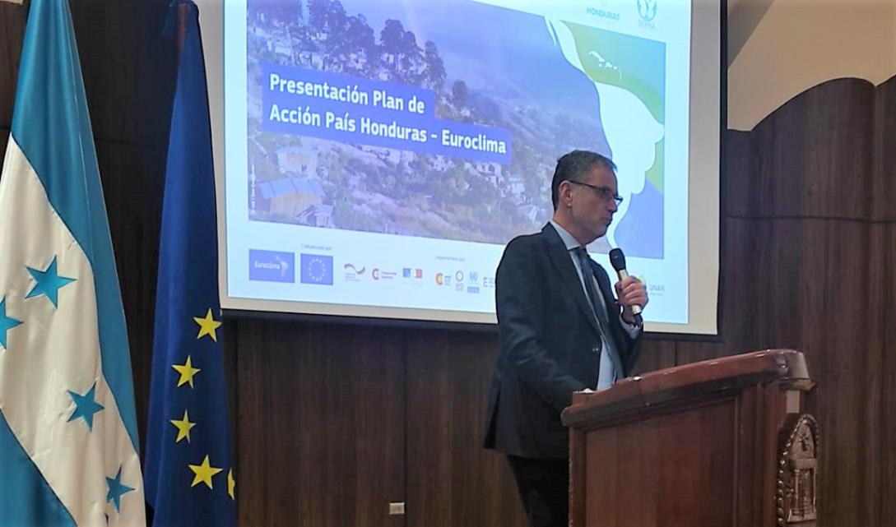
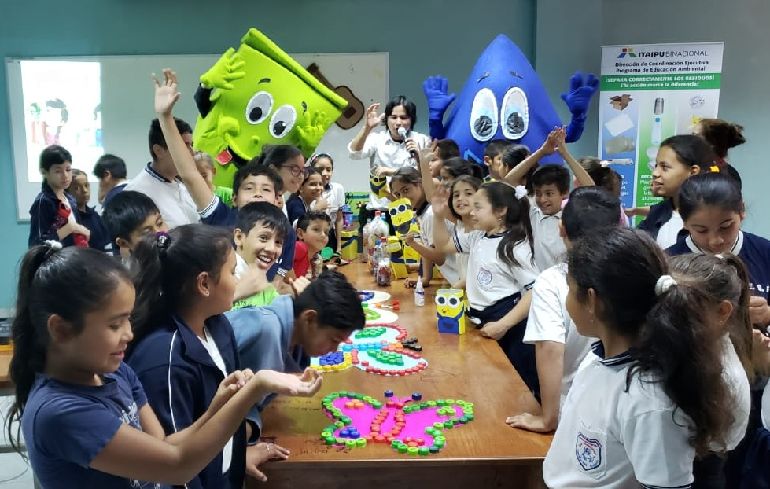
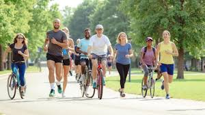
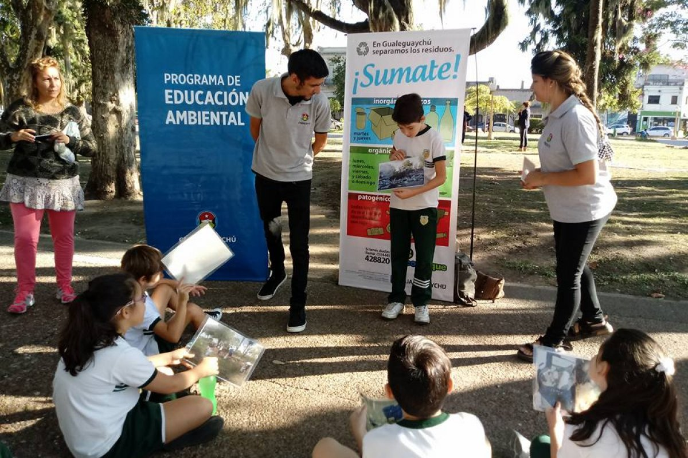
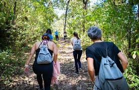
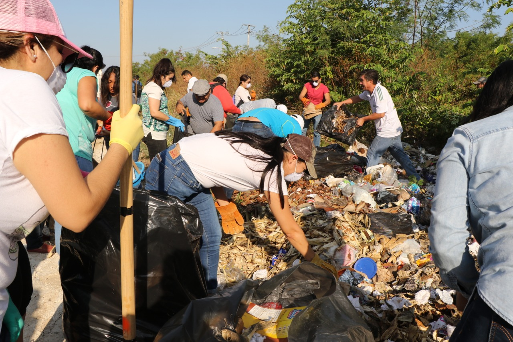

¿Quiénes somos?
Comprometidos con el desarrollo ambiental y comunitario en Honduras


Comprometidos con el desarrollo ambiental y comunitario en Honduras
Somos una organización dedicada a la protección del medio ambiente y el desarrollo sostenible en comunidades de Honduras.
Impulsamos proyectos de reforestación, educación ambiental, limpieza comunitaria y conservación de recursos naturales.
Tenemos como misión promover la protección, conservación y restauración del medio ambiente mediante la participación activa de la comunidad, el desarrollo de programas de educación ambiental y la ejecución de acciones sostenibles que contribuyan al bienestar ecológico y social del país. Busca generar conciencia, fortalecer valores ambientales y fomentar una cultura de responsabilidad colectiva orientada al uso adecuado de los recursos naturales.
Ser una organización líder a nivel nacional en la gestión ambiental comunitaria, reconocida por su impacto positivo en la conservación de los recursos naturales, la formación de ciudadanos comprometidos y la implementación de iniciativas innovadoras que impulsen un desarrollo sostenible. Aspirando a construir un futuro donde la armonía entre el ser humano y la naturaleza sea una prioridad en cada acción.

Espacio de aprendizaje donde expertos comparten información clave sobre el cambio climático, sus efectos en Honduras y las acciones que podemos tomar para proteger el medio ambiente y construir un futuro sostenible.

Actividad interactiva en la que los participantes aprenden a reutilizar materiales como plástico, cartón y vidrio, transformándolos en objetos útiles y promoviendo una cultura de reciclaje en la comunidad.

Evento que promueve el uso de medios de transporte ecológicos como la bicicleta y la caminata, con el objetivo de reducir la contaminación y fomentar hábitos saludables en la población.

Actividad educativa dirigida a niños de escuelas primarias, donde se enseñan de forma dinámica y divertida temas como el reciclaje, el cuidado del agua y la protección de la naturaleza, fomentando desde temprana edad la conciencia ambiental.

Actividad al aire libre que permite a los participantes conectar con la naturaleza, conocer la biodiversidad local y aprender sobre la importancia de conservar los ecosistemas.

Evento en el que voluntarios se unen para limpiar espacios públicos, fomentando el trabajo en equipo y el compromiso ciudadano con el cuidado del entorno.